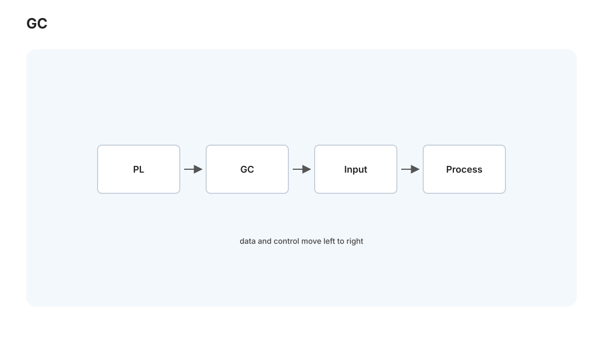
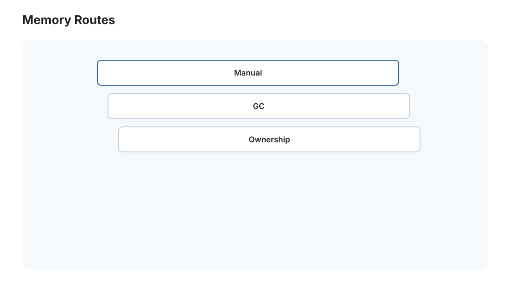

语言 II · 语义、函数式与垃圾回收
对标：TAPL / Harper PFPL / GC 手册（Jones）｜ 前置：pl-01（λ 演算、类型）、comp-02（解释器） pl-01 讲了语言的类型骨架，这一页补三块：形式语义（怎么严格定义"程序是什么意思"，而非靠直觉）、函数式编程范式（不可变、纯函数、高阶抽象的威力，以及它为什么在并发和 ML 时代复兴）、垃圾回收（内存自动管理的机制——你写 Python/JS 不用 free，底下发生了什么）。
1. 形式语义：程序"意义"的严格定义
编译器/解释器要正确，先得说清"程序该做什么"——这就是语义。三种风格：
- 操作语义（operational）：用归约规则定义"程序一步步怎么执行"（pl-01 的 β 归约、comp-02 的 eval 就是操作语义）。最直观、最常用于实现和证明。分小步（single-step，看每一步）和大步（big-step，直接给最终结果）。
- 指称语义（denotational）：把程序映射到数学对象（函数、集合）——"这个程序 = 这个数学函数"。抽象、优雅，用于推理程序等价。
- 公理语义（axiomatic）：用逻辑断言描述——Hoare 逻辑 \(\{P\}\,C\,\{Q\}\)："若执行前 \(P\) 成立，执行 \(C\) 后 \(Q\) 成立"。这是程序验证的基础（🔗 与形式化方法、Lean 证明程序正确性相通）——循环不变量、前置/后置条件都从这来。
为什么要形式语义：① 语言设计无歧义（规范书里的语义定义让不同实现行为一致）；② 证明编译器/优化正确（comp-03 的优化不改变语义——"不改变语义"要先有语义的严格定义）；③ 程序验证（证明这段代码满足规约）。"意义的数学化"是 PL 从手艺变成科学的关键。
2. 函数式编程：不可变的威力
pl-01 的 λ 演算是函数式的根。函数式范式的核心信条：
- 纯函数：输出只依赖输入、无副作用（不改全局、不做 I/O）——引用透明（同输入必同输出，可安全替换、缓存、并行）。
- 不可变数据：不修改、只创建新版本——消灭了一大类 bug 的根源（别名导致的意外修改、并发的数据竞争 os-02）。
- 高阶函数：函数当参数/返回值——map/filter/reduce（🔗 dist-03 MapReduce 直接借名！）、组合子、柯里化。
为什么函数式在今天复兴： - 并发友好：不可变 + 无共享状态 = 天然无数据竞争（par 线/os-02 的噩梦大半消失）——Erlang/Elixir 靠这个做高并发、Rust 借鉴不可变默认。 - ML/数据流友好：纯函数 + 不可变正是 JAX/函数式 autodiff（mlsys-01）的基础——计算图是纯函数组合、可微、可并行、可优化。 - 易推理：无副作用的代码好测试、好验证（Hoare 逻辑更简单）。
实践中的融合：现代主流语言都吸收了函数式特性——Python 的 map/lambda/列表推导、JS 的高阶函数、Rust 的迭代器 + Option/Result（避免 null，🔗 rust-01）。你不必写纯函数式语言，但"优先不可变、优先纯函数"是能立刻用上的工程纪律（写 Medusa 的数据处理时，纯函数管线比一堆可变状态好调试得多）。
3. 代数数据类型与模式匹配
函数式语言的一个杀手级特性，正在被所有现代语言抄——代数数据类型（ADT）+ 模式匹配：
- 和类型（sum type） type Shape = Circle(r) | Rect(w,h)——"要么是这个要么是那个"，编译器强制你处理所有情况（🔗 pl-01 的和类型 \(A+B\)）。
- 模式匹配 match shape { Circle(r) => ..., Rect(w,h) => ... }——按形状解构 + 分发，穷尽性检查保证不漏 case。
- Option/Result 消灭 null：把"可能没有值""可能出错"编码进类型（Option<T> = 有 T 或没有），强制处理"空"的情况——Tony Hoare 称 null 是他的"十亿美元错误"，ADT 是解药（rust-01 会看到 Rust 靠它根除空指针）。
这是本站反复出现的主题的又一例：把"容易忘的运行时情况"编码进类型、让编译器强制处理——类型系统当纪律执行者（pl-01 的 soundness、rust 的所有权同一哲学）。
4. 垃圾回收：内存自动管理


C 要手动 malloc/free（csapp-04 的痛），容易泄漏/悬垂。垃圾回收（GC）自动回收"不再可达"的内存——你写 Python/Java/JS/Go 不用管 free，靠的是它。核心机制：
- 可达性：从根（栈、全局变量）出发能到达的对象是"活的"，到不了的是垃圾。
- 追踪式 GC：
- 标记-清除（mark-sweep）：标记所有可达对象、清除其余。会产生碎片。
- 复制式（copying）：把活对象复制到新空间、整个旧空间回收——无碎片但用双倍空间。
- 分代 GC（generational）："大多数对象很快就死"（弱分代假说）——把新对象放"年轻代"频繁快速回收、老对象放"老年代"少回收。这是现代 GC（JVM、V8、Go）的主力，抓住了对象生命周期的统计规律。
- 引用计数：每对象记被引用次数、归零即回收（Python 的主力 + 循环检测）——及时、平滑，但处理不了循环引用（要辅助手段）、且计数更新有开销。
GC 的权衡：省心、消灭内存 bug——代价是运行时开销 + 停顿（GC pause）（回收时可能暂停程序，实时系统的敌人）。这正是 Rust 的立场（rust-01）：不用 GC、也不手动 free，而是用所有权在编译期确定何时释放——既无 GC 停顿又无内存 bug。"手动管理（C）vs GC（Java/Python）vs 所有权（Rust）"是内存管理的三条路线，各有取舍，本站语言线把三者讲全。
5. 练习与要点
例 1（Hoare 逻辑手推） 给一段"交换两变量"的代码，用 \(\{P\}C\{Q\}\) 证明它确实交换了——体会"用逻辑断言证明程序正确"，程序验证的最小例子。
例 2（纯函数改写） 把一段用可变全局状态累加的代码改写成纯函数 + reduce——体会引用透明如何让代码可测、可并行。Medusa 数据处理可用。
例 3（GC 判活） 画一个有循环引用但从根不可达的对象图，判断追踪式 GC（能回收）vs 引用计数（漏掉）的区别——理解"为什么 Python 除了引用计数还需要循环检测器"。\(\blacksquare\)
下一页：Python I——数据模型与惯用法：你天天用的 Python，它一切皆对象的世界观、dunder 协议与 Pythonic 惯用法。（语言线接下来走三门主力语言：Python 的高层生产力 → C++ 的系统级掌控 → Rust 的安全综合。）